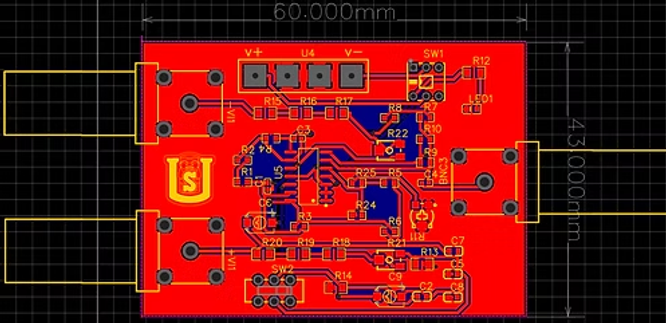

Diseño e implementación de una sonda diferencial activa
Debido a que el proyecto inicial de la placa de aprendizaje no pudo avanzar a la fase de fabricación por no cumplir con las normas de diseño de circuitos IPC, el equipo decidió aprender de esta experiencia y emprender un nuevo proyecto. En esta ocasión, se priorizó el cumplimiento de dichas normas desde el inicio, con el objetivo de garantizar la calidad y viabilidad del diseño.
El proyecto parte del análisis y diseño de una sonda diferencial para osciloscopios, iniciando con la planificación del PCB y los cálculos correspondientes. La distribución de las tareas fue clara: dos integrantes diseñaron el PCB, otro investigó la teoría necesaria para entender el circuito, mientras que otros dos, incluyendo el autor de este informe, se encargaron de los cálculos.
Primer diseño
En el diseño inicial, se utilizó el amplificador operacional AD8009, con un ancho de banda de 420 MHz y un slew rate de 5,500 V/µs. Este diseño resultó ser excesivamente sofisticado para el propósito de la sonda, elevando costos y dificultando su implementación debido al uso de amplificadores individuales.
Segundo diseño
Para el rediseño, se optó por el ADA4861-3, que integra tres amplificadores operacionales en un único encapsulado. Este cambio redujo el tamaño del PCB, simplificó el ruteo, minimizó interferencias electromagnéticas y disminuyó significativamente los costos. Con un ancho de banda de 135 MHz y un slew rate de 1,000 V/µs, este amplificador cumple con los requisitos del proyecto sin añadir complejidad innecesaria.
Puedes obtener el disño completo del circuito en el siguiente enlace: Sonda Diferencial
Análisis
Cálculo de la atenuación en un diseño de sonda diferencial: La fórmula para la atenuación es la siguiente:
\begin{equation*} Atenuación (A) = \frac{R2}{(R1 + R2)} \end{equation*}Donde R1 y R2 son las resistencias que determinan el nivel de atenuación de la señal de entrada. Fórmula para calcular la ganancia de un amplificador operacional en un diseño de sonda: La ganancia de un amplificador en configuración no inversora se calcula con la fórmula:
\begin{equation*} G = 1 + \frac{R2}{R1} \end{equation*}Donde Rf es la resistencia de retroalimentación y Ri es la resistencia de entrada. Cálculo de la respuesta en frecuencia de los amplificadores operacionales: La respuesta en frecuencia se describe mediante la siguiente relación:
\begin{equation*} G = \frac{A_{max}}{1 + j \frac{f}{f_c}} \end{equation*}Donde \(A_{max}\) es la ganancia máxima, f es la frecuencia de la señal de entrada y fc es la frecuencia de corte. Ajuste de la frecuencia de corte para optimizar el rendimiento de la sonda: La frecuencia de corte en un filtro RC se calcula con la fórmula:
\begin{equation*} f_c = \frac{1}{2 \pi \ R \ C} \end{equation*}Donde R es la resistencia y C es la capacitancia del filtro.
La selección adecuada de amplificadores operacionales (op-amps) es esencial para asegurar el correcto funcionamiento del diseño de una sonda diferencial. Entre los factores clave a considerar destacan el ancho de banda, el slew rate, el número de amplificadores integrados y la relación costo-eficiencia. Al analizar los amplificadores utilizados en el primer y segundo diseño de la sonda, es posible observar cómo se optimizaron estos aspectos para mejorar el rendimiento y reducir la complejidad del dispositivo.
1. Ancho de Banda
En el primer diseño se utilizó el amplificador AD8009, que cuenta con un ancho de banda de 420 MHz, ideal para manejar señales de alta frecuencia. Sin embargo, para esta aplicación específica, un ancho de banda tan amplio no es necesario, ya que la sonda diferencial solo debe trabajar con señales de hasta 10 MHz. Este exceso no solo incrementa los costos, sino que también añade complejidad innecesaria al diseño. En el segundo diseño, se optó por el ADA4861-3, con un ancho de banda de 135 MHz, suficiente para las necesidades del proyecto. Esto permitió reducir costos y mejorar la eficiencia sin sacrificar precisión.
2. Slew Rate (Tasa de Variación de Voltaje)
El AD8009 tiene un slew rate de 5,500 V/µs, lo que le permite responder rápidamente a señales con cambios abruptos. Si bien esto es adecuado para frecuencias muy altas, resulta excesivo en un diseño que no requiere manejar frecuencias tan rápidas.
En contraste, el ADA4861-3, con un slew rate de 1,000 V/µs, sigue siendo suficientemente rápido para señales de hasta 10 MHz, mientras que reduce el consumo de energía y mejora la estabilidad general del circuito.
3. Número de Amplificadores Operacionales Integrados
En el primer diseño se utilizaron tres amplificadores operacionales individuales AD8009, lo que incrementa las conexiones en la PCB, genera más puntos de interferencia potencial y complica el ruteo del diseño. En el segundo diseño, se reemplazaron por un único circuito integrado ADA4861-3, que agrupa tres amplificadores operacionales en un solo encapsulado. Este cambio simplifica el diseño, reduce el espacio requerido en la PCB y minimiza las conexiones externas, mejorando así la estabilidad y reduciendo posibles interferencias.
4. Costo y Eficiencia de Diseño
El AD8009 es un amplificador de alto rendimiento, lo que implica un costo elevado. Aunque inicialmente se seleccionó para garantizar la capacidad de manejar señales de alta frecuencia, esta especificación resultó ser innecesaria para el propósito del proyecto. En el segundo diseño, el ADA4861-3 ofreció un equilibrio óptimo entre costo y desempeño, proporcionando un rendimiento adecuado para las frecuencias objetivo del proyecto y resultando significativamente más económico.
Determinacióm del tamaño
Un PCB de mayor tamaño puede ocasionar problemas de ruido e interferencia debido a las mayores distancias entre los componentes. En el primer diseño de la sonda diferencial, la PCB tenía dimensiones de 129.9 mm de ancho por 40 mm de alto, lo que derivaba en un ruteo más complejo y una mayor susceptibilidad a la interferencia electromagnética entre las diferentes etapas del circuito. En contraste, en el segundo diseño, el tamaño de la PCB se redujo a 60 mm de ancho por 43 mm de alto, lo que permitió realizar ruteos más cortos y mejorar la integridad de la señal al minimizar las trayectorias susceptibles a interferencias.
La reducción en el tamaño de la PCB también optimizó la disposición de
los componentes, mejorando la eficiencia general del diseño. Con un
tamaño más compacto, los componentes se pudieron organizar de manera
que se redujeran interacciones no deseadas, como el acoplamiento entre
señales de alta y baja frecuencia. Esto contribuyó a una mejor
disposición de las rutas y a una calibración más precisa de las
mediciones, ya que la proximidad entre los componentes es importante
para mantener la estabilidad de las señales.
Además, una PCB más pequeña no solo mejora el rendimiento de la sonda,
sino que también reduce costos al ahorrar materiales y espacio. Este
diseño compacto facilita la fabricación de la PCB y minimiza el número
de conexiones necesarias, lo que disminuye el riesgo de fallos y
errores durante el ensamblaje.
Elección de la atenuación
La elección de componentes de atenuación 1X y 10X en el diseño de la sonda diferencial es clave para ajustar la intensidad de la señal medida según el tipo de análisis. Estas etapas conmutables permiten cambiar entre atenuación directa (1X) y una reducción de 10 veces (10X), lo que es fundamental para adaptar la sonda a señales de diferentes amplitudes y proteger el osciloscopio de valores fuera de rango. Un interruptor facilita la selección de la atenuación, mejorando la usabilidad del dispositivo. El uso de capacitores y resistencias variables optimiza la respuesta a distintas frecuencias, minimizando errores y brindando flexibilidad para calibrar la precisión según las necesidades del usuario, lo cual es especialmente importante en aplicaciones de alta frecuencia y entornos con ruido eléctrico.
Ventajas de usar resistencias y capacitores variables:
- Calibración precisa: Permiten ajustar la respuesta del atenuador para minimizar errores, logrando mediciones más exactas.
- Adaptabilidad: Facilitan la adaptación del diseño a señales de diferentes características, ampliando su rango de aplicación.
- Reducción de ruido: Ayudan a minimizar el impacto del ruido eléctrico en el diseño, mejorando la calidad de las mediciones.
- Flexibilidad de diseño: Permiten realizar ajustes en función de las necesidades del usuario sin requerir modificaciones físicas en la PCB. Esto convierte a la sonda en una herramienta más versátil y efectiva para medir señales en diferentes escenarios.